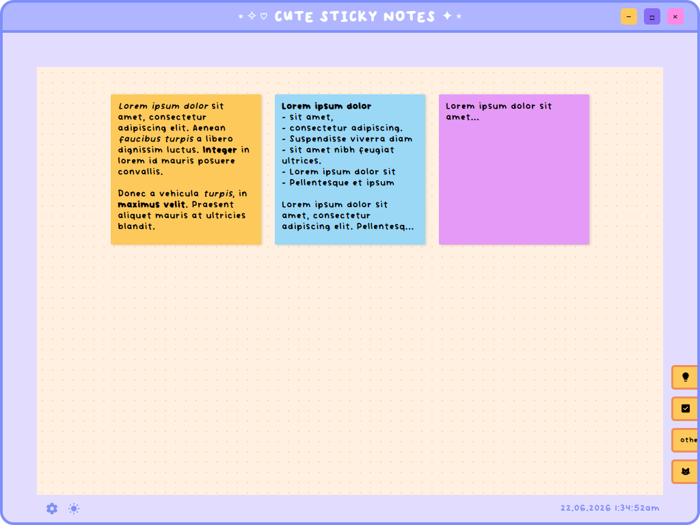
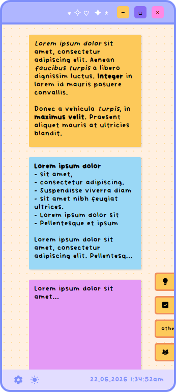

Tools: HTML and CSS, JavaScript, Svelte, Go, Wails
Summary of Project
Cute sticky notes (very creative name, I know) is a small, simple notes application made in Wails.
The application allows users to create written notes with filtered tags for organisation and different, cutomisable colours.


Objective
My aim for this project was to create a cute notes app and familiarise myself with Wails and Svelte.
Concept and thoughts
I made the project with the goal of wanting to familiarise myself with Wails, as, while I am familiar with using Electron and Express, I knew that Electron was known for using up a lot of memory and space that a small project of its size didn't need. Hence, Wails Go: a smaller, lightweight alternative.
Additionally, as Wails supported Svelte—something that I had touched on in another project, but hadn't used much since then—I wanted to better learn the framework and optimise my code using components.
My role
This project is working but still in development for new features :) (like search function, themes, notes popout and pin function, etc.).